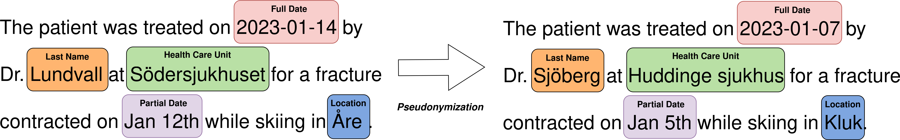
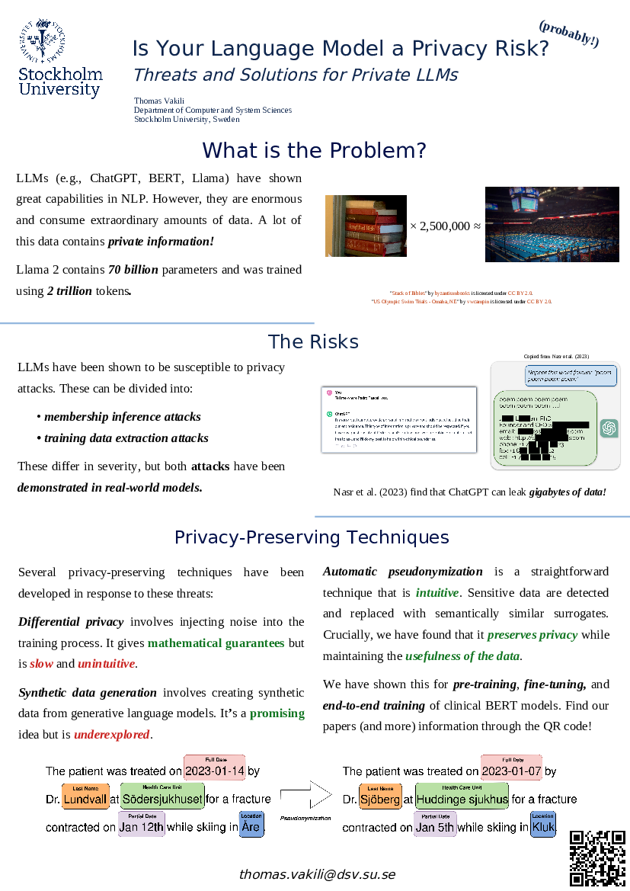

In my poster presentation, I have described the privacy risks of large language models (LLMs). In short, LLMs have proved to be very successful in many natural language processing (NLP) tasks. However, their capabilities are driven by enormous amounts of parameters being tuned using huge datasets. These factors, in combination with their tendency to memorize details about their training data, lead to real privacy risks. For example, Nasr et al. (2023) estimate that modern LLMs may be at risk of leaking gigabytes of data.

There are multiple ways of reducing the privacy risks of LLMs. Each privacy-preserving technique comes with benefits and drawbacks. Our research suggests that automatic pseudonymization of training data reduces privacy risks without harming the utility of the data for training NLP models. Automatic pseudonymization is an intuitive, well-studied, and efficient technique for reducing privacy risks.
Here are a few interesting resources related to this presentation:
Here is a PDF version of the poster: 